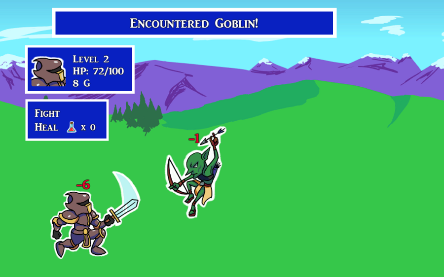

Conveyor Belt Hero

April 2018
Programming Language: C#
A Unity game made in 72 hours for the Ludum Dare 41 game jam. The theme of the game jam was to combine two incompatible genres.
Conveyor Belt Hero is a mix of an infinite runner and a turn-based RPG, in which the player is constantly moving forward
while trying to defeat enemies quickly in order to level up and earn money. Money must be picked up before it moves off the screen, as
it necessary to buy healing potions at merchants. The player wins when the boss at the end is defeated before the final screen.
Play it Here
Play it Here